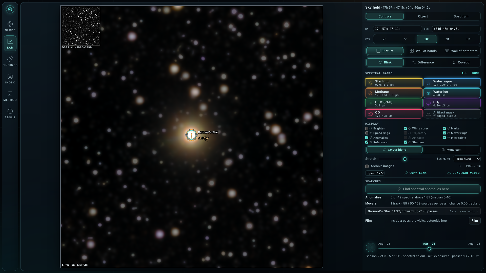
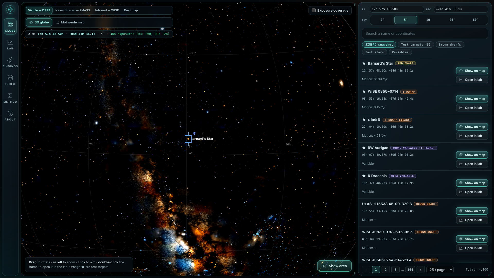
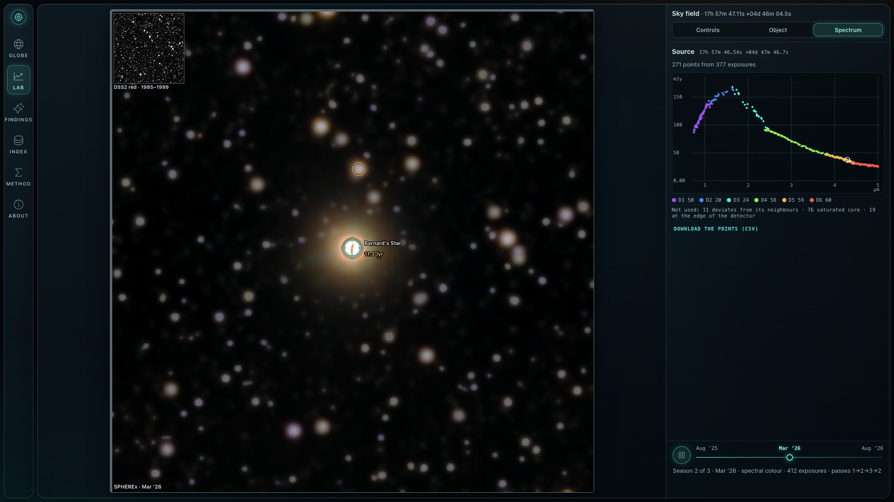
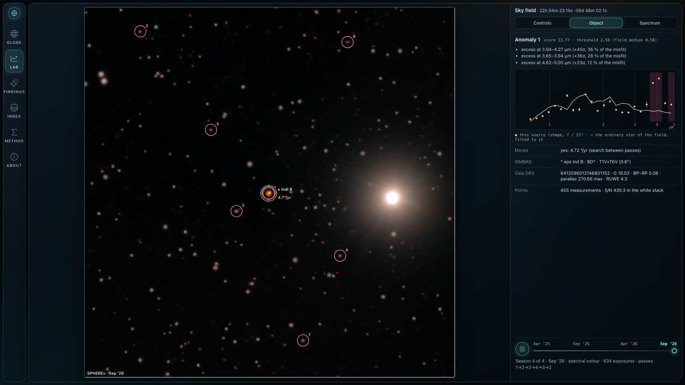
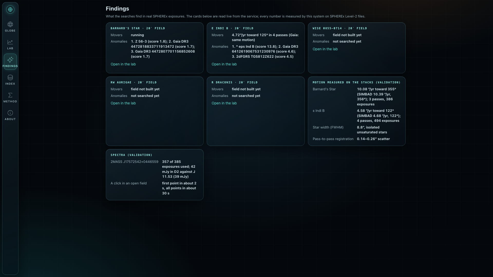

see the sky change
Good Karma Lab · Barcelona
spherex.space





Open any place, play its seasons, click a star, find what moves.
Code: github.com/Good-karma-lab/Planet-X-SPHEREx · Apache-2.0
Built with AI coding assistants under the team's direction (see our SI statement). No generated imagery: every picture is computed from the data.